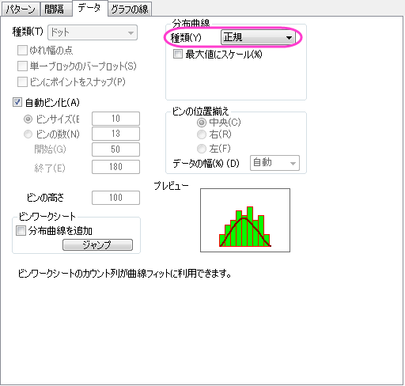
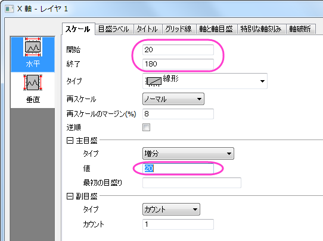

分布曲線投影
Marginal-Distribution-Curve
サマリー
Originのグラフは高度な編集が可能です。ヒストグラム投影グラフから分布曲線投影グラフを作図する方法を紹介します。
必要なOriginのバージョン: Origin 2015 SR0以降
学習する項目
- ヒストグラム投影グラフの作図
- 異なるフィルタ条件のプロットを作図するためにフィルタロックを使用する
- 手動でプロットをグループ化する
フィルタロックを使用するためのステップ
Origin9.1では、単一ソースワークシート内の異なるデータフィルタを設定できるため、既存のグラフを失うことなくそれぞれのフィルタ条件の変更が可能です。これにより、新しいシートにフィルタデータをコピーし、フィルタデータ上に「フィルタロック」を配置可能です。
- <Origin EXE フォルダ>\Samples\Statistics\automobile.datをインポートします。
- A列を選択して、右クリックし、フィルタ：フィルタを追加または削除を選択します。
- 列ヘッダに表示されたフィルタアイコンをクリックし、範囲を選択します。
- 開いたダイアログで、開始と終了を1992と1995にセットし、OKをクリックします。
- Power列とWeight列を選択し、右クリックして、列をコピーを選択します。
- colcopyダイアログで、コピー先の列のテキストボックスに、以下の例のように1992~1995!<新規>を入力し、OKをクリックします。
- 新しく作成されたシートで、列Aのヘッダに表示された緑の鍵のアイコンをクリックし、ワークシートフィルタ：ロックを選択します。
- automobileシートに戻り、ステップ4から7を繰り返し、フィルタ条件1996~1999と2000~2004のシートを作成します。シートの名前はその都度colcopyダイアログで設定する必要があります。。それぞれのシートで、フィルタ条件のロックは、ワークシートフィルタ：戻るを使用して戻ることができます。
分布曲線投影グラフの作成操作
- "1992~1995"シートを開き、全ての列を選択して作図：統計グラフ：ヒストグラム投影を選択します。

- ヒストグラムの棒上でダブルクリックして、作図の詳細ダイアログを開きます。データタブを開き、分布曲線：種類を正規分布にします。この設定はLayer2用です。
- 
- パターンタブを開き、下図のようにビンの棒を非表示に設定します。
- グラフの線タブを開き、色を黒にします。適用ボタンをクリックして、グラフを更新します。
- 2~4の操作をLayer3（右のヒストグラム）に対しても行います。
グループ化分布曲線投影グラフの作成操作
- メニューからグラフ操作：作図のセットアップと選択します。
 | 作図のセットアップダイアログで3つのパネルを全ての表示するために ボタンをクリックしてグラフタイプパネルを開き、再度をクリックして利用可能なデータパネルを開きます。 ボタンをクリックしてグラフタイプパネルを開き、再度をクリックして利用可能なデータパネルを開きます。
詳細な情報は作図のセットアップで作図を参照してください。
|
- 下部パネルで、Layer1を選択します。以下ように設定し、追加をクリックします。
- Layer2に"Power"のヒストグラムを追加します。
- Layer3に"Weight"のヒストグラムを追加します。
- 操作2から4を繰り返し、2000～2004のデータをそれぞれのレイヤに追加します。プロットリストは次のようになります。
- OK をクリックして作図の詳細ダイアログボックスを閉じて、グラフを再スケールします。
プロットをグループ化するステップ
- グラフウィンドウ左上のレイヤ1アイコン
 を右クリックし、レイヤの内容を選択します。
を右クリックし、レイヤの内容を選択します。
- 3つすべてのプロットを選択し、グループ化ボタンをクリックします。そしてOKボタンをクリックします。
- ステップ2の操作をレイヤ2と3に対して同様に行います。

詳細編集
- 下の軸をダブルクリックしてレイヤ1の軸ダイアログを開きます。スケールタブを開いて垂直と水平の軸は以下のようにそれぞれ設定します。
- 
- OK をクリックして、軸ダイアログを閉じます。グラフをダブルクリックして作図の詳細ダイアログを開きます。レイヤ1にある最初のデータプロットのLayer1を選択してグラフグループタブを開きます。シンボルタイプはなしを設定し、次のように設定します。
- OKをクリックして、ダイアログを閉じます。シンボルタブを開き、以下のように設定します。
- Layer2のデータタブを開き、ビンの設定をXのスケールと同じにします。そして適用をクリックします。
- Layer2のグラフグループタブを開きます。編集モードを独立にして、独自にプロットの詳細を決めることが出来るようにして、適用をクリックします。
- パターンタブを開き、Layer2の3つのデータプロットにうちて、先ほどの分布曲線投影グラフの作成操作のステップ3で行った操作により棒を非表示にします。
- データプロット1992~1995のグラフの線タブを開き、以下のように設定します。
- レイヤ2内のほかのデータプロットに対しても操作7を繰り返し、レイヤ1のシンボルんの色に対応する線の色にします。
- Layer3にステップ5から8の手順を繰り返し、OKをクリックして作図の詳細を閉じて設定を適用します。
- レイヤ1をアクティブにし、グラフ操作：凡例：データプロットを選択します。
- 凡例上で右クリックし、オブジェクトの表示属性を選択し、背景を黒線にし、サイズを18に設定します。OKをクリックします。
- フォーマット：作図の詳細(ページ属性)と操作して作図の詳細ダイアログを開きます。凡例/タイトルタブを開き、以下のように設定して凡例のテキストとしてワークシート名を使用するようにします。
- 必要に応じて、凡例の位置を調整します。この時点では、グラフは以下のようになります。

グラフレイヤの再配置のステップ
- 下の軸をダブルクリックしてレイヤ1の軸ダイアログを開きます。グリッド線タブを開き、Ctrlキーを押しながら垂直と水平アイコンを選択します。
- OK をクリックして、ダイアログを閉じます。レイヤ2の軸ダイアログを開き、軸と軸目盛タブを開き、左側パネルで下アイコンが選択されている事を確認した後、軸と軸目盛の表示のチェックを図して下にある軸線を非表示にします。同じ事をレイヤ3にある左アイコンでも行います。
- レイヤ管理ダイアログを開き、Layer2を選択してサイズ/位置タブで、オプションを移動にし、上を-35にします。適用をクリックします。
- Layer3では、左を102にします。適用ボタンをクリックします。OKをクリックしてダイアログボックスを閉じます。